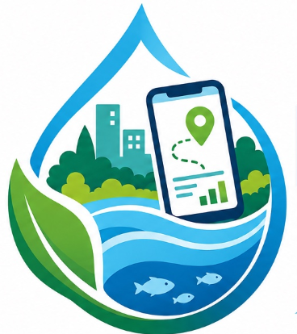

LIMBAH SMART
Informasi
Peta Fasilitas
Lapor Limbah
Pantau
Edukasi
Evaluasi
Dashboard Evaluasi
Pusat kendali data tindak lanjut laporan masyarakat.
Total Laporan (Bulan Ini)
124
Menunggu Tindak Lanjut
87
Selesai Ditangani
37
Sebaran Titik Pencemaran per Wilayah
Rasio Status Penyelesaian